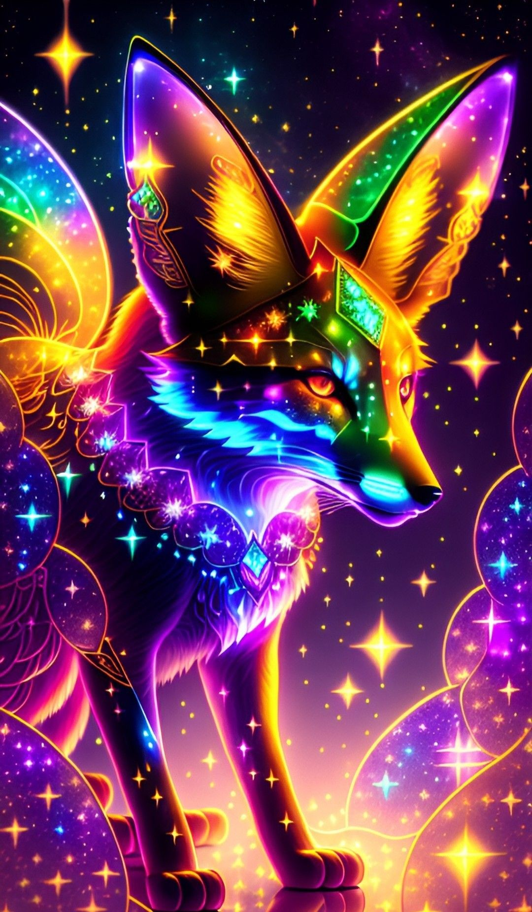
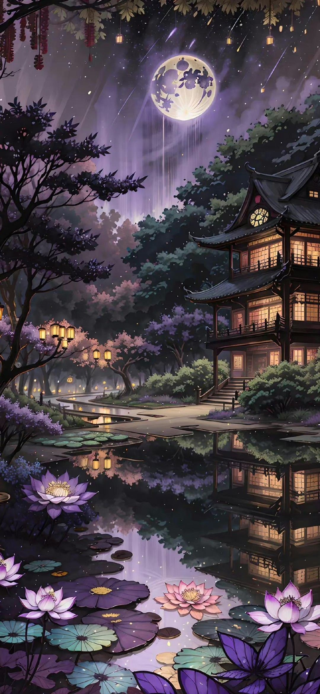

Mon enfance
J'ai vécu en Martinique pendant 5 ans. Je suis venue avec mes parents en France quand j'étais en grande section de maternelle. J'ai deux grands demi-frères qui vivent à Paris. moi, j'habite dans le Var, à Vidauban. j'aimais beaucoup m'amuser à la corde à saute, à chat et à d'autre jeux. J'aimais aussi me faire des amis. Mais ce que j'aime le plus c'est : vivre dans un monde imaginaire.
Mes loisirs
J'aime voyager. Dans ma vie, j'ai voyager en Martinique, en angleterre, à Cuba... j'aimerais aussi voyager
dans les pays asiatiques comme la Chine ou bien la Thailande. Parce que, depuis que je vois des series et des
films asiatiques, je voudrais en savoir sur les coutumes de ce pays. De plus, voyager est un moment que
j'aime plus que tout au monde.
J'aime aussi lire et regarder des vidéos. Ces créations sont pour moi, l'essence de mon imagination. je ne
peux pas vivre sans lire ou regarder une fois dans ma vie.
J'aime, également parler avec mes amies et ma famille. Lorsque l'on parle avec les autres on peut mélanger nos
culture.
Mes études
Mes études sont pour moi génial. Enfin, si on parle seulement de l'université. Car il est vrai que le lycée et le collège ont été difficiles à gérer (pour ne pas dire autre choses!). Je suis heureuse de faire des études supérieures. c'est vrai ! Au collège, on avait la matière Technologique, mais ce n'était pas aussi génial que ça. Aujourd'hui, on fait du code et je trouve ça facile à comprendre et pratiquer. De plus, cela ressemble à une nouvelle langue que tout le monde peut apprendre et que tout le monde devraient connaître.
Ma magie
J'adore la magie. Je regarde, je lis, je vis. J'aimerais tellement que la magie existe dans notre monde.
J'aimerais que les dimensions interdimensionnelles soient réelles pour qu'on puisse s'amuser et s'aventurer
dans les autres mondes. Je me suis toujours demandée si il était possible de pouvoir créer de la magie
avec ceux que nous avons.
En tout cas, même si la magie n'éxistais pas, je me créé moi-même un monde fait pour moi.